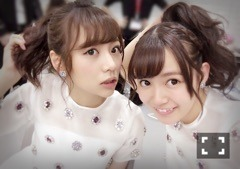

| 2016/11 12 Sat | ひめたん-0o0-その682 |

16thシングル「サヨナラの意味」
発売になりました！
皆さんのお手元には
届きましたでしょうか( ˇωˇ )
是非感想聞かせてください
私は
「サヨナラの意味」
「孤独な青空」
「君に贈る花がない」歌ってます～
MVオフショット～
そんな発売日の9日深夜は
文化放送「レコメン！」
ニッポン放送「オールナイトニッポン」に
出演させていただきました！
ラジオ大好き人間の中元には
とんでもなく幸せな一夜でした！
聞いてくださった方ありがとう( ˇωˇ )

23時の前髪。
レコメンはノリさんに
久々にお会いできました～＊
去年の夏以来かな？
また呼んで頂けて光栄でした
パジャマトークは鉄板なんですね～
オールナイトニッポンは
サンエトのお姉さん4人で登場。
蘭世は高校生ということで
今回は出演できなかったけれど、
番組にメールくれたり
終わってからみんなにメッセージくれたり
本当に律儀な子だなと。
まわし的な役割を任せて頂きました～
初っ端噛むという( ´ ･ω･ ` )
緊張しいなのでごめんなさいねぇ
でも楽しかったです！
何よりオールナイトニッポンに
出演してる私！！ってなった！！
まいちゅんのANN0にも
ちょこっとお邪魔しました～久々～♪
～お知らせ～
雑誌
11/24 乃木坂46×週刊プレイボーイ2016
ライブ
12/6 乃木坂46 Merry Xmas Show 2016
12/8 乃木坂46 Merry Xmas Show 2016
TV
11/15 うたコン
11/15 サラメシ
11/17 ベストヒット歌謡祭2016
11/17 Rの法則
11/26 日テレ HALLOWEEN LIVE 2016
12/16 堂本兄弟もうすぐクリスマスSP

ポニーテールお揃い～
今日は特典イベントでした
ありがとうございました！
明日は個別握手会ですo(^o^)o
4週連続の明日が4週目だそうで
「裸足でSummer」ラスト握手会ですね。
参加するよ～って皆さん
よろしくお願いします！
(＊´・ω・＊)
コメント(553)
2016/11/12 23:36